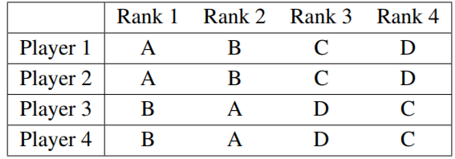
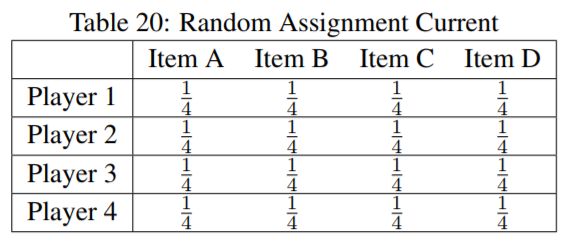
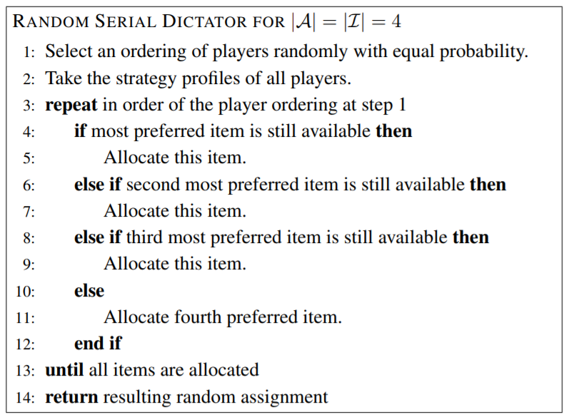
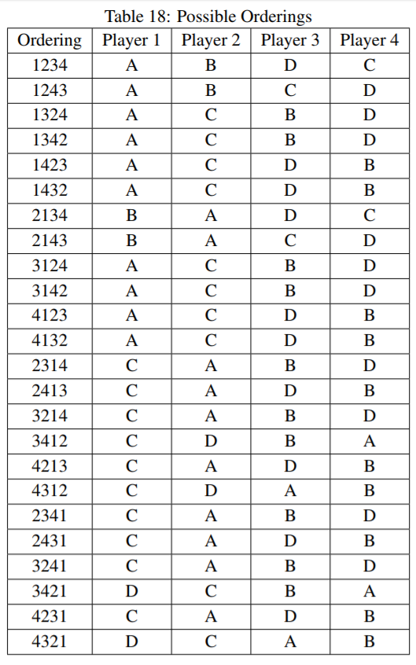
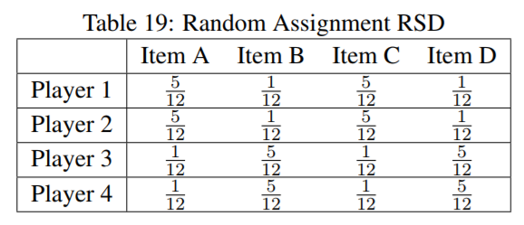

There is one problem that keeps popping up again and again. Court Wizard: instant ragequit d1. Physician: “so boring”. King: “so demanding, I’m eating”. Now this will be a reality in any game where there are multiple roles randomly assigned to you. However we can randomly assign in a much much smarter way to alleviate a large amount of this frustration. In short it will work like this:
- Every player can rank all classes from preferred to least preferred in settings. If these are not filled in a default or random preference list will be created. (Although this can even be somewhat smartly implemented in the algorithm, however let’s build the basics first)
- For every newly created game, create the class list behind the scenes first.
- Simply match the preferences from step 1 to the class list created at step 2 in a smart way.
Let’s have an illustrative example. I copied some of these tables from my bachelor thesis, so they’re not as “clean”, but I think they bring along the message well enough.
Let’s say there is only Assassin, Butler, Court Wizard and Drunk as classes in the game (or A, B, C and D).
4 players with certain predefined preferences over 4 classes (items). Let’s arbitrarily make them like this.

This means that player 1 prefers to have Assassin over Butler over Court Wizard over Drunk.
Note they have to be similar to create conflict, but dissimilar enough to create meaningful improvements.
Secondly note that this example can straightforwardly be extended towards 16, the usual amount of players.
Currently the system just assigns a completely random class, so we would end up with the following allocation:

introducing the Random Serial Dictator mechanism:

In short this means a queue of “dictators” is created randomly with equal probability. Each dictator can in turn pick a class that has not been picked by a previous dictator. What they pick obviously represents their preferences.
All possible randomly created orderings are as following:

And this would lead to the following allocation, if you calculate out all the chances.

Its effect is remarkable. Player 1 has a 5/12th chance to get Assassin (his most preferred role) as opposed to 1/4th under the current system. Player 1 also now has a 1/12th chance to get Drunk (his least preferred role) as opposed to 1/4th under the current system.
There are zero downsides to switching to this system aside from the cost of implementing the relatively simple algorithm plus the UI demands.
The upsides are however that classes are assigned much more efficiently and cater to the individual player’s needs. The algorithm only uses Pareto improvements, so literally all players involved will be happier, with this new allocation.
Plus the data behind the settings can be invaluable to the developers to measure how well liked each class is. Let’s say that Court Wizard ranks lowest on the settings for 30% of the playerbase, from the 20+ classes. That’d speak volumes about the unenjoyable experience of Court Wizard. These statistics trump all the anecdotal evidence obtained through forum complaints. Academically speaking the mechanism is strategyproof, so any preferences given in settings, will reflect the true preferences of the individual, so the data is trustworthy.
If this post is received well, I can make another on a different “solution” algorithm that favours efficiency over strategyproofness, but no longer uses Pareto improvements, or simply append it here.
 preserving the integrity of the game, as before. Besides this system does not mean that because class X is your favourite, you’ll get that class 100% of the time. It just gives you a bit of a higher chance to get that class as opposed to other classes, provided it is even in the randomly selected class list.
preserving the integrity of the game, as before. Besides this system does not mean that because class X is your favourite, you’ll get that class 100% of the time. It just gives you a bit of a higher chance to get that class as opposed to other classes, provided it is even in the randomly selected class list.